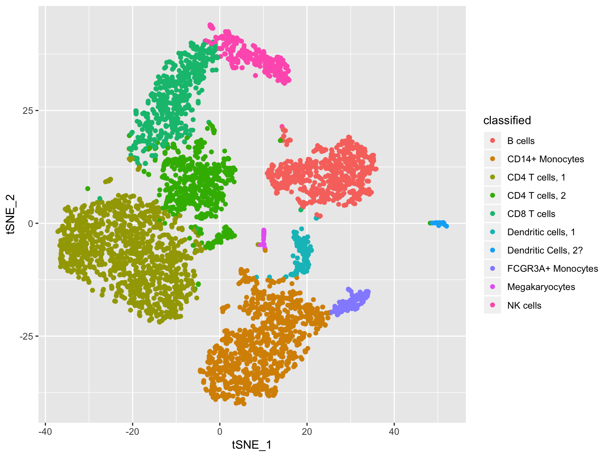
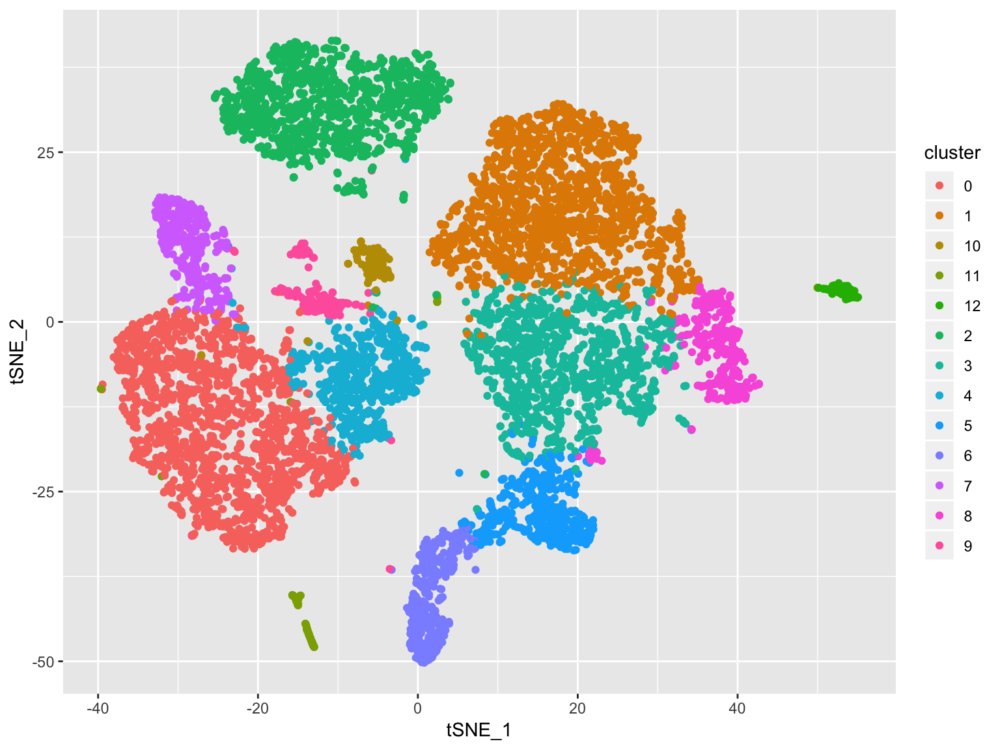

Cell type prediction using Random Forest model
The goal is to build a random forest model using single-cell RNA-seq expression data to predict the cell type in each cluster. The training set contains an expression matrix with normalized readcounts per gene per cell, clustering information and identified cell types. The test set contains only the expression and clusters.
# Reduce the expression matrix to only highly variable genes
# source('reduce_matrix.R')
# Input files for random forest
# Training set
pbmc4 <- reduce_expr_matrix(pbmc4k_matrix, pbmc4k_meta, pbmc4k_vargenes)
# Test set
pbmc5 <- reduce_expr_matrix(pbmc5_matrix, pbmc5_meta, pbmc4k_vargenes)
# Make sure the listed genes (predictors) are the same in both dataset
names(pbmc5)[names(pbmc5) == "cluster"] <- "classified"
pbmc4.sub <- pbmc4[, colnames(pbmc4) %in% colnames(pbmc5)]
pbmc5.sub <- pbmc5[, colnames(pbmc5) %in% colnames(pbmc4.sub)]Plot training data
# plot tsne using known identities
qplot(tSNE_1, tSNE_2, colour = classified, data = pbmc4k_meta)
Model parameter tuning
# Algorithm Tune (tuneRF)
seed <- 100
set.seed(seed)
# initial mtry <- sqrt(ncol(pbmc4))
x <- pbmc4[,2:ncol(pbmc4)]
y <- pbmc4[,1]
bestmtry <- tuneRF(x, y, stepFactor=1.5, improve=1e-5, ntree=500)
print(bestmtry)
# In this case bestmtry is 256 when ntree is 500
# Tune model using caret
# Custom tuning
# https://machinelearningmastery.com/tune-machine-learning-algorithms-in-r/
customRF <- list(type = "Classification", library = "randomForest", loop = NULL)
customRF$parameters <- data.frame(parameter = c("mtry", "ntree"), class = rep("numeric", 2), label = c("mtry", "ntree"))
customRF$grid <- function(x, y, len = NULL, search = "grid") {}
customRF$fit <- function(x, y, wts, param, lev, last, weights, classProbs, ...) {
randomForest(x, y, mtry = param$mtry, ntree=param$ntree, ...)
}
customRF$predict <- function(modelFit, newdata, preProc = NULL, submodels = NULL)
predict(modelFit, newdata)
customRF$prob <- function(modelFit, newdata, preProc = NULL, submodels = NULL)
predict(modelFit, newdata, type = "prob")
customRF$sort <- function(x) x[order(x[,1]),]
customRF$levels <- function(x) x$classes
metric <- "Accuracy"
control <- trainControl(method="repeatedcv", number=10, repeats=3)
tunegrid <- expand.grid(.mtry=c(250:260), .ntree=c(500, 1000, 1500, 2000))
set.seed(seed)
rf_tune <- train(classified~., data=pbmc4, method=customRF, metric=metric, tuneGrid=tunegrid, trControl=control)
summary(rf_tune)
plot(rf_tune)Build model with optimal parameters
#Optimal mtry and ntree
bmtry<- 256
bntree<- 1000 #for testing purpose
#Build the model
rFmodel.sub <- randomForest(classified ~ ., data = pbmc4.sub, ntree = bntree, mtry = bmtry, importance = TRUE)
save(rFmodel.sub,file = "rFmodelsub.RData")Call:
randomForest(formula = classified ~ ., data = pbmc4.sub, ntree = bntree, mtry = bmtry, importance = TRUE)
Type of random forest: classification
Number of trees: 1000
No. of variables tried at each split: 256
OOB estimate of error rate: 8%
Confusion matrix:
B cells CD14+ Monocytes CD4 T cells, 1 CD4 T cells, 2
B cells 642 3 6 0
CD14+ Monocytes 0 1006 6 1
CD4 T cells, 1 2 2 1270 12
CD4 T cells, 2 1 1 146 403
CD8 T cells 1 0 37 20
Dendritic cells, 1 0 15 3 0
Dendritic Cells, 2? 1 0 1 0
FCGR3A+ Monocytes 0 19 0 1
Megakaryocytes 1 8 0 0
NK cells 1 2 1 0
CD8 T cells Dendritic cells, 1 Dendritic Cells, 2?
B cells 0 1 0
CD14+ Monocytes 0 2 0
CD4 T cells, 1 1 0 0
CD4 T cells, 2 34 0 0
CD8 T cells 502 1 0
Dendritic cells, 1 0 110 0
Dendritic Cells, 2? 0 0 36
FCGR3A+ Monocytes 0 0 0
Megakaryocytes 0 0 0
NK cells 34 0 0
FCGR3A+ Monocytes Megakaryocytes NK cells class.error
B cells 0 0 0 0.01533742
CD14+ Monocytes 1 0 0 0.00984252
CD4 T cells, 1 0 0 0 0.01320901
CD4 T cells, 2 0 0 0 0.31111111
CD8 T cells 0 0 11 0.12237762
Dendritic cells, 1 0 0 0 0.14062500
Dendritic Cells, 2? 0 0 0 0.05263158
FCGR3A+ Monocytes 93 0 0 0.17699115
Megakaryocytes 1 25 0 0.28571429
NK cells 0 0 249 0.13240418# To check important variables
importance(rFmodel)
varImpPlot(rFmodel)
Important variables
Check expression patterns of important genes
load("rFmodelsub.RData")
important <-as.data.frame(importance(rFmodel.sub))
# source('important_heatmap.R')
dev.print(png, file = "myplot.png")
png(file = "expression_heatmap.png", bg = "white")
important_heatmap(important, pbmc4k_avg, pbmc4k_meta, 20, 30)
dev.off()With MeanDecreaseAccuracy >=20 and MeanDecreaseGini >=30: 
With MeanDecreaseAccuracy >=15 and MeanDecreaseGini >=20: 
Fit the model with new data
pred <- predict(rFmodel.sub, pbmc5.sub, type = "class")
# Checking classification accuracy
table(pred, pbmc5.sub$classified) Column names: cluster number from the pbmc5 dataset (testing set). Row names: predicted cell type
pred 0 1 10 11 12 2 3 4 5 6 7 8 9
B cells 0 0 0 2 3 1233 0 1 0 3 0 0 3
CD14+ Monocytes 1765 0 9 34 2 1 1 555 0 1 88 0 159
CD4 T cells, 1 0 1626 5 9 4 17 274 60 5 0 5 225 9
CD4 T cells, 2 0 56 1 5 0 2 838 0 4 1 3 121 1
CD8 T cells 0 0 0 1 0 1 73 1 450 38 0 5 0
Dendritic cells, 1 5 0 93 0 0 0 0 5 0 0 0 0 0
Dendritic Cells, 2? 0 0 0 0 67 1 0 0 0 0 0 0 0
FCGR3A+ Monocytes 1 0 0 1 0 0 0 1 0 0 286 0 4
Megakaryocytes 0 0 0 40 0 0 0 0 0 0 0 0 0
NK cells 0 0 0 1 0 0 0 0 3 347 0 0 0